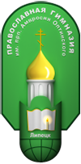

По благословению Высокопреосвящейнешего Митрополита Липецкого и Задонского Никона
По благословению Высокопреосвящейнешего Митрополита Липецкого и Задонского Никона

Рождение:
23 ноября/6 декабря 1812 г.
Мирские именины:
23 ноября/6 декабря
Постриг в мантию:
29 ноября/12 декабря 1842 г.
День тезоименитства:
7/20 декабря
Иерейская хиротония:
9/22 декабря 1845 г.
Постриг в схиму:
1846-1848 гг.
Кончина (день памяти):
10/23 октября 1891 г.
Обретение мощей:
27 июня/10 июля 1998 г.
Святые мощи преподобного Амвросия находятся во Введенском соборе
Краткое житие
Во Введенском храме Оптиной Пустыни находится рака с мощами преподобного Амвросия, старца Оптинского – человека, который оказал огромное влияние на духовную жизнь всей России XIX века. К его молитвенной помощи и заступничеству прибегаем мы и сегодня. У мощей старца происходят чудеса, люди исцеляются от многих, порой неизлечимых болезней.
Преподобный Амвросий не был епископом, архимандритом, не был даже игуменом, он был простым иеромонахом. Будучи смертельно болен он принял схиму, и стал иеросхимонахом. В этом чине он и умер. Для любителей карьерной лестницы это может быть непонятно: как же так, такой великий старец – и просто иеромонах?
О смирении святых очень хорошо сказал митрополит Московский Филарет. Был он однажды на богослужении в Троице-Сергиевой Лавре, где в то время присутствовало множество архиереев и архимандритов, к которым принято обращаться: «Ваше Высокопреосвященство, Ваше Высокопреподобие». И тогда перед мощами отца нашего Сергия Радонежского митрополит Филарет сказал: «Вот всё вокруг слышу Ваше Высокопреосвященство, Ваше Высокопреподобие, один ты, отче, просто преподобный».
Вот таким и был Амвросий, старец Оптинский. Он мог с каждым поговорить на его языке: помочь неграмотной крестьянке, которая жаловалась, что умирают индюшки, и барыня прогонит её со двора. Ответить на вопросы Ф.М. Достоевского и Л.Н. Толстого и других, самых образованных людей того времени. «Всем бых вся, да всяко некия спасу» (1 Кор. 9, 22). Слова его были простыми, меткими, порой с добрым юмором:
«Мы должны жить на земле так, как колесо вертится, чуть одной точкой касается земли, а остальным стремится вверх; а мы, как заляжем, так и встать не можем». «Где просто, там ангелов со сто, а где мудрено — там ни одного». «Не хвались горох, что ты лучше бобов, размокнешь — сам лопнешь». «Отчего человек бывает плох? — Оттого, что забывает, что над ним Бог». «Кто мнит о себе, что имеет нечто, тот потеряет». «Жить проще - лучше всего. Голову не ломай. Молись Богу. Господь всё устроит, только живи проще. Не мучь себя, обдумывая, как и что сделать. Пусть будет – как случится, - это и есть жить проще». «Нужно жить, не тужить, никого не обижать, никому не досаждать, и всем моё почтение». «Жить – не тужить – всем довольной быть. Тут и понимать-то нечего». «Если хочешь иметь любовь, то делай дела любви, хоть сначала и без любви».

А когда ему кто-то сказал: «Вы, батюшка, очень просто говорите», старец улыбнулся: «Да я двадцать лет этой простоты у Бога просил».
Преподобный Амвросий был третьим по счету Оптинским старцем, учеником преподобных Льва и Макария, и самым известным и прославленным из всех Оптинских старцев. Именно он стал прототипом старца Зосимы из романа "Братья Карамазовы» и духовным наставником всей православной России. Каким был его жизненный путь?
Когда говорится о судьбах, обычно имеется в виду видимое течение человеческой жизни. Но нельзя забывать о душевной драме, которая всегда важнее, насыщеннее и глубже внешней жизни человека. Святой Василий Великий дал человеку определение такими словами: «Человек - невидимое существо». В высшей степени это относится к духовным людям такого уровня как преподобный Амвросий. Мы можем видеть канву их внешней жизни и только догадываться о сокровенной внутренней жизни, основу которой составлял молитвенный подвиг, незримое предстояние перед Господом.
Из биографических событий, которые известны, можно отметить какие-то важные вехи его многотрудной жизни. Родился мальчик в селе Большая Липовица Тамбовской губернии в благочестивой семье Гренковых, тесно связанной с Церковью: дед – священник, отец, Михаил Фёдорович, – пономарь. Перед рождением ребёнка к деду – священнику съехалось так много гостей, что родильницу, Марфу Николаевну, перевели в баню, где она и родила сына, названного в святом крещении в честь благоверного великого князя Александра Невского. Позднее, Александр Гренков, став уже старцем, шутил: «Как на людях я родился, так всё на людях и живу».
Александр был шестым из восьмерых детей в семье. Рос он живым, смышленым, бойким, в строгой семье ему иногда даже доставалось за детские шалости. В 12 лет мальчик поступил в Тамбовское духовное училище, которое блестяще закончил первым из 148 человек. С 1830 по 1836 годы юноша учился в Тамбовской семинарии. Обладая живым и веселым характером, добротою и остроумием, Александр был очень любим своими товарищами. Перед ним, полным сил, талантливым, энергичным, лежал блестящий жизненный путь, полный земных радостей и материального благополучия.
Но пути Господни неисповедимы... Святитель Филарет писал: «Всеведущий Бог избирает, предназначает от колыбели, а призывает в определённое Им время, непостижимым образом совмещая сопряжение всевозможных обстоятельств с изволением сердца. Господь в своё время препоясывает и ведёт Своих избранных так, как бы они не желали, но туда, куда желают дойти».
В 1835 году, незадолго до окончания семинарии, юноша опасно заболел. Эта болезнь была одной из первых многочисленных болезней, которые мучили старца всю жизнь. Святитель Игнатий Брянчанинов писал: «Я провел всю жизнь в болезнях и скорбях, как тебе известно: но ныне не будь скорбей — нечем спастись. Подвигов нет, истинного монашества — нет, руководителей — нет; одни скорби заменяют собою всё. Подвиг сопряжен с тщеславием; тщеславие трудно заметить в себе, тем более очиститься от него; скорбь же чужда тщеславия и потому доставляет человеку богоугодный, невольный подвиг, который посылается Промыслителем нашим сообразно произволению...» Эта первая опасная болезнь привела к тому, что молодой семинарист дал обет в случае выздоровления стать монахом.
Но он не мог решиться исполнить этот обет четыре года, по его словам, «не решался сразу покончить с миром». Некоторое время был домашним учителем в одной помещичьей семье, а затем преподавателем Липецкого духовного училища. Решающей стала поездка в Троице-Сергиеву Лавру, молитвы у мощей преподобного Сергия Радонежского. Известный затворник Иларион, которого встретил молодой человек в этом путешествии, отечески наставил его: «Иди в Оптину, ты там нужен».
После слёз и молитв в Лавре мирская жизнь, развлекательные вечера в гостях показались Александру такими ненужными, лишними, что он решил срочно и тайно уехать в Оптину. Возможно, он не хотел, чтобы уговоры друзей и родных, пророчивших ему блестящее будущее в миру, поколебали его решимость исполнить обет посвятить свою жизнь Богу.

В Оптиной Александр стал учеником великих старцев Льва и Макария. В 1840 году он был одет в монашеское платье, в 1842 году принял монашеский постриг с именем Амвросия. 1843 год – иеродьякон, 1845 год – иеромонах. За этими краткими строками – пять лет трудов, аскетической жизни, тяжёлой физической работы.
Когда известный духовный писатель Е. Поселянин потерял любимую жену, и друзья посоветовали ему оставить мир и уйти в монастырь, ответил: «Я рад бы оставить мир, но в монастыре меня пошлют работать на конюшню». Неизвестно, какое послушание дали бы ему, но он верно почувствовал, что в монастыре постараются смирить его дух, чтобы из духовного писателя превратить в духовного делателя.
Александр был готов к монастырским испытаниям. Молодому монаху пришлось работать в пекарне, печь хлеб, варить хмелины (дрожжи), помогать повару. С его блестящими способностями, знанием пяти языков, ему, наверное, нелегко было стать просто помощником повара. Эти послушания воспитывали в нём смирение, терпение, умение отсекать свою волю.
Прозорливо угадав в юноше дары будущего старца, преподобные Лев и Макарий заботились о его духовном возрастании. Некоторое время он был келейником старца Льва, его чтецом, регулярно приходил по службе к старцу Макарию и мог задать ему вопросы о духовной жизни. Преподобный Лев особенно любил молодого послушника, ласково называя его Сашей. Но из воспитательных побуждений испытывал при людях его смирение. Делал вид, что гремит против него гневом. Но другим про него говорил: «Великий будет человек». После смерти старца Льва юноша стал келейником старца Макария.
Во время поездки в Калугу для рукоположения в иеромонахи, отец Амвросий, изнурённый постом, схватил сильную простуду и тяжело заболел. С тех пор он уже никогда не мог поправиться, и состояние здоровья у него было таким плохим, что в 1846 году его по болезни вывели за штат. Всю оставшуюся жизнь он еле передвигался, страдал от испарины, так что переодевался по несколько раз в сутки, не выносил холода и сквозняков, пищу употреблял только жидкую, в количестве, которого едва бы хватило трёхлетнему ребёнку.
Несколько раз он бывал при смерти, но каждый раз чудесным образом, при помощи благодати Божией возвращался к жизни. С сентября 1846 г. по лето 1848 г. состояние здоровья отца Амвросия было настолько угрожающим, что он в келье был пострижен в схиму с сохранением прежнего имени. Однако совершенно неожиданно для многих больной начал поправляться. В 1869 г. состояние его здоровья опять было настолько плохим, что стали терять надежду на поправку. Была привезена Калужская чудотворная икона Божьей Матери. После молебна и келейного бдения, а затем соборования здоровье старца поддалось лечению.
Святые отцы перечисляют около семи духовных причин болезней. Об одной из причин болезней они говорят: «Став праведными, святые претерпевали искушения или по причине каких-то недостатков, или чтобы получить большую славу, потому что обладали великим терпением. И Бог, не желая, чтобы излишек их терпения оставался неиспользованным, попускал им искушения и болезни».
Преподобным Льву и Макарию, которые вводили традиции старчества, умной молитвы в монастыре, пришлось при этом столкнуться с непониманием, клеветой, гонениями. У преподобного Амвросия не было таких внешних скорбей, но, пожалуй, никто из Оптинских старцев не нёс такого тяжёлого креста болезни. На нём сбывались слова: «Сила Божия в немощи совершается»
Особенно важным для духовного возрастания преподобного Амвросия в эти годы было общение со старцем Макарием. Несмотря на болезнь, отец Амвросий остался по-прежнему в полном послушании у старца, даже в малейшей вещи давал отчет ему. По благословению старца Макария он занимался переводом святоотеческих книг, в частности, им была подготовлена к печати «Лествица» преподобного Иоанна, игумена Синайского. Благодаря руководству старца отец Амвросий смог без особых преткновений обучиться искусству из искусств — умной молитве.
Еще при жизни старца Макария, с его благословения, некоторые из братии приходили к отцу Амвросию для открытия помыслов. Кроме монахов, отец Макарий сближал отца Амвросия и со своими мирскими духовными чадами. Так старец постепенно готовил себе достойного преемника. Когда же старец Макарий преставился в 1860 году, то постепенно обстоятельства так складывались, что отец Амвросий был поставлен на его место.
Старец принимал у себя в келье толпы людей, никому не отказывал, народ стекался к нему со всех концов страны. Вставал он в четыре — пять утра, звал к себе келейников, и читалось утреннее правило. Затем старец молился один. С девяти часов начинался прием: сперва монашествующих, затем мирян. Часа в два ему приносили скудную еду, после которой он час-полтора оставался один. Затем читалась вечерня, и до ночи возобновлялся прием. Часов в 11 совершалось длинное вечернее правило, и не раньше полуночи старец оставался, наконец, один. Так в течение более тридцати лет, изо дня в день, старец Амвросий совершал свой подвиг. До отца Амвросия никто из старцев не открывал двери своей кельи женщине. Он же не только принимал множество женщин и был их духовным отцом, но и основал недалеко от Оптиной пустыни женский монастырь – Казанскую Шамординскую пустынь, в которую, в отличие от других женских монастырей того времени, принимали больше неимущих и больных женщин. К 90-м годам 19 века число инокинь в ней достигло 500 человек.

Старец обладал дарами умной молитвы, прозорливости, чудотворения, известно множество случаев исцеления. Многочисленные свидетельства рассказывают о его благодатных дарах. Одна женщина из Воронежа в семи верстах от монастыря заблудилась. В это время к ней подошел какой-то старичок в подряснике и скуфейке, он указал ей клюкой направление пути. Она пошла в указанную сторону, тотчас увидела монастырь и пришла к домику старца. Все, слушавшие её рассказ, подумали, что старичок этот был монастырский лесник или кто-либо из келейников; как вдруг на крылечко вышел келейник и громко спросил: «Где тут Авдотья из Воронежа?» — «Голубушки мои! Да ведь Авдотья из Воронежа я сама и есть!» — воскликнула рассказчица. Минут через пятнадцать она вышла из домика вся в слезах и, рыдая, отвечала на вопросы, что старичок, указавший ей дорогу в лесу, был не кто иной, как сам отец Амвросий.
Вот один из случаев прозорливости старца, рассказанный мастеровым: « Надо было мне ехать в Оптину за деньгами. Иконостас мы там делали, и приходилось мне за эту работу от настоятеля получить довольно крупную сумму денег. Перед отъездом зашел к старцу Амвросию взять благословение на обратный путь. Домой ехать я торопился: ждал на следующий день получить большой заказ — тысяч на десять, и заказчики должны были быть непременно на другой день у меня в К. Народу в этот день у старца, по обыкновению, была гибель. Прознал он про меня, что я дожидаюсь, да и велел мне сказать через своего келейника, чтобы я вечером зашел к нему чай пить.
Приходит вечер, пошел я к старцу. Продержал меня батюшка, ангел наш, довольно-таки долго, уже почти смеркалось, да и говорит мне: «Ну, ступай с Богом. Здесь ночуй, а завтра благословляю тебя идти к обедне, а от обедни чай пить заходи ко мне». Как же это так? — думаю я. Да не посмел перечить. Задержал меня старец на три дня. Уж не до молитвы мне было у всенощной — так и толкает в голову: «Вот тебе твой старец! Вот тебе и прозорливец...! Свистит теперь твой заработок». На четвёртый день прихожу к старцу, а он мне: «Ну, теперь пора тебе и ко двору! Ступай с Богом! Бог благословит! Да по времени не забудь Бога поблагодарить!»
И отпала тут у меня всякая скорбь. Выехал я себе из Оптиной пустыни, а на сердце-то так легко и радостно... К чему только сказал мне батюшка: «Потом не забудь Бога поблагодарить!?» Приехал я домой, и что вы думаете? Я в ворота, а заказчики мои за мной; опоздали, значит, против уговору на трое суток приехать. Ну, думаю, ах ты мой старчик благодатный!
Прошло с того времени немало. Заболевает мой старший мастер к смерти. Прихожу к больному, а он глянул на меня да как заплачет: «Прости мой грех, хозяин! Я ведь тебя убить хотел. Помнишь, ты из Оптиной запоздал на трое суток приехать. Ведь нас трое, по моему уговору, три ночи подряд тебя на дороге под мостом караулили: на деньги, что ты за иконостас из Оптиной вез, позавидовали. Не быть бы тебе в ту ночь живым, да Господь за чьи-то молитвы отвел тебя от смерти без покаяния... Прости меня, окаянного!» «Бог тебя простит, как я прощаю». Тут мой больной захрипел и кончаться начал. Царствие небесное его душе. Велик был грех, да велико покаяние!»
Что касается исцелений, им не было числа. Эти исцеления старец всячески прикрывал. Иногда он, как бы в шутку, стукнет рукой по голове, и болезнь проходит. Однажды чтец, читавший молитвы, страдал сильной зубной болью. Вдруг старец ударил его. Присутствующие усмехнулись, думая, что чтец, верно, сделал ошибку в чтении. На деле же у него прекратилась зубная боль. Зная старца, некоторые женщины обращались к нему: «Батюшка Абросим! Побей меня, у меня голова болит». Больные после посещения старца выздоравливали, у бедняков налаживалась жизнь. Павел Флоренский называл Оптину пустынь "духовной санаторией израненных душ".
Духовная сила старца проявлялась иногда в совершенно исключительных случаях. Однажды старец Амвросий, согбенный, опираясь на палочку, откуда-то шел по дороге в скит. Вдруг ему представилась картина: стоит нагруженный воз, рядом лежит мертвая лошадь, а над ней плачет крестьянин. Потеря лошади-кормилицы в крестьянском быту ведь сущая беда! Приблизившись к павшей лошади, старец стал медленно ее обходить. Потом взяв хворостину, он стегнул лошадь, прикрикнув на нее: «Вставай, лентяйка!» — и лошадь послушно поднялась на ноги.
Многим людям старец Амвросий являлся на расстоянии, подобно святителю Николаю Чудотворцу, или с целью исцеления, или для избавления от бедствий. Некоторым, весьма немногим, открывалось в зримых образах, сколь сильно молитвенное предстательство старца перед Богом. Вот воспоминания одной монахини, духовной дочери отца Амвросия о его молитве: «Старец выпрямился во весь свой рост, поднял голову и воздел руки кверху, как бы в молитвенном положении. Мне представилось в это время, что стопы его отделились от пола. Я смотрела на освещенную его голову и лицо. Помню, что потолка в келье как будто не было, он разошелся, а голова старца как бы ушла вверх. Это мне ясно представилось. Через минуту батюшка наклонился надо мной, изумленной виденным, и, перекрестив меня, сказал следующие слова: «Помни, вот до чего может довести покаяние. Ступай».
Рассудительность и прозорливость совмещались в старце Амвросии с удивительной, чисто материнской нежностью сердца, благодаря которой он умел облегчить самое тяжелое горе и утешить самую скорбную душу. Любовь и мудрость — именно эти качества притягивали к старцу людей. Слово старца было со властью, основанной на близости к Богу, давшей ему всезнание. Это было пророческое служение.
Час своей кончины суждено было старцу Амвросию встретить в Шамордино. 2 июня 1890 г. он по обыкновению выехал туда на лето. В конце лета старец три раза пытался вернуться в Оптину, но не смог по причине нездоровья. Через год болезнь усилилась. Его соборовали и неоднократно причащали. 10 октября 1891 года старец, три раза вздохнув и с трудом перекрестившись, скончался. Гроб с телом старца под моросившим осенним дождем был перенесен в Оптину пустынь, и ни одна из свеч, окружавших гроб, не погасла. На погребение съехалось около 8 тысяч человек. 15 октября тело старца было предано земле с юго-восточной стороны Введенского собора, рядом с его учителем старцем Макарием. Именно в этот день, 15 октября, в 1890 году, старец Амвросий установил праздник в честь чудотворной иконы Божией Матери «Спорительница хлебов», перед которой он сам много раз возносил свои горячие молитвы.
Шли годы. Но не зарастала тропа к могиле старца. Наступили времена тяжких потрясений Оптина Пустынь была закрыта, разорена. Была стерта с лица земли часовня на могиле старца. Но память о великом угоднике Божием уничтожить было невозможно. Люди наугад обозначили место часовни и продолжали притекать к своему наставнику.
В ноябре 1987 г. Оптина Пустынь была возвращена Церкви. А в июне 1988 г. Поместным Собором Русской Православной Церкви преподобный Амвросий, первым из Оптинских старцев, был причислен к лику святых. В годовщину возрождения обители, по милости Божией, произошло чудо: ночью после службы во Введенском соборе мироточили Казанская икона Божией Матери, мощи и икона преподобного Амвросия. Совершались другие чудеса от мощей старца, коими он удостоверяет, что не оставляет нас, грешных, своим заступничеством пред Господом нашим Иисусом Христом. Ему слава вовеки, Аминь.
полное житие письма фотографии
Материал взят с официального сайта Введенского ставропигиального мужского монастыря "Оптина пустынь"
Все новости
Подробнее....
398000,Липецкая область,
ул.Прокатная, дом 10
Телефон в Липецке
Т:
+7(4742) 28-80-76
+7(4742) 28-71-74